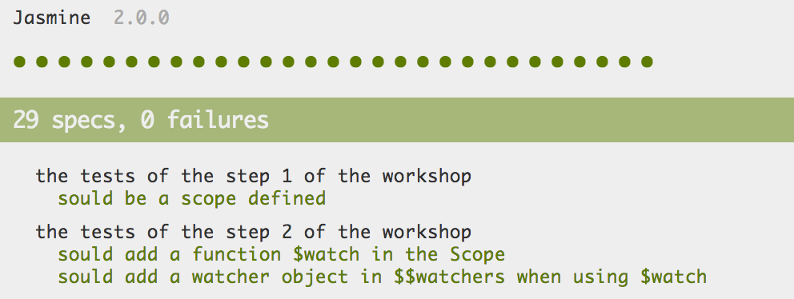

AngularJS From Scratch
http://github.com/Zenika/angular-from-scratch
Olivier Huber
 @ZenikaIT
@ZenikaITMatthieu Lux
 @Swiip
@SwiipReferences
Build Your Own AngularJS
 @teropa
@teropaCute: A small, readable edit of AngularJS
 @timruffles
@timrufflesAvec Angular...
<html>
<head>
<script src="angular.js"></script>
</head>
<body ng-app>
<h1 ng-bind="hello"></h1>
<input type="text" ng-model="hello">
</body>
</html>
From Scratch?
<html>
<head>
<script> ? ? ? </script>
</head>
<body>
<h1 ng-bind="hello"></h1>
<input type="text" ng-model="hello">
</body>
</html>
Le workshop
<html>
<body>
<h1 ng-bind="hello"></h1>
<input type="text" ng-model="hello">
<script src="zengular.js"></script>
</body>
</html>

Une suite de test est prète pour valider chaque étape
Raffraichir simplement : tests/SpecRunner.html
Chrome Dev Tools

La majorité du workshop se passera dans la console

"A JavaScript library that provides a whole mess of useful functional programming helpers without extending any built-in objects."
<script src="underscore.js"></script>
<script>
var a = [1, 2, 3];
_.each(a, function(num){
console.log(num);
});
</script>
Le $scope
- Correspond au modèle de données de l'application
- Stocke les données en JavaScript standard
- Propose $watch pour surveiller des changements
- Propose $apply pour propager des changements
- Implémente une $digest loop Il est au coeur de la magie

Étape 1
Le $scope
- Le framework
- Définir l'objet scope
- Utilisation du framework
- Instancier un scope
- Y insérer des données
- Les afficher avec console.log
Étape 2
Scope.$watch
- Le framework
- Ajouter un tableau "$$watchers" dans le scope
- Définir la fonction $watch dans le prototype du scope
- La fonction $watch ajoute un watcher dans la liste
- Utilisation du framework
- Utiliser la fonction $watch pour surveiller une donnée
- Vérifier qu'elle est bien ajoutée à la liste des watchers
Étape 3
Scope.$digest
- Le framework
- Définir la fonction $digest dans le prototype du scope
- La fonction $digest itère sur les watchers enregistré
- Pour chacun, comparer la valeur avec la précédente
- Utilisation du framework
- Utiliser la fonction $watch pour surveiller une donnée
- Lancer la fonction $digest pour déclencher un listener
Étape 4
Scope.$apply
- Le framework
- Définir la fonction $apply dans le prototype du scope
- La fonction $apply prend une fonction en argument
- $apply lance $digest quoi qu'il arrive
- Utilisation du framework
- Utiliser la fonction $watch pour surveiller une donnée
- Réaliser une modification sur le scope via $apply
Étape 5
Digest loop !
- Le framework
- Définir si une "digestion" a occasionné une modification
- Boucler la "digestion" tant qu'il y a des modifications
- Mettre en place un garde fou contre les boucles infinie (ttl)
- Utilisation du framework
- Réaliser un $watch qui déclenche une nouvelle modification
- Réaliser deux $watch qui créent une boucle infinie
Étape 6
Let's get dirty !
- Le framework
- Ajouter une propriété byValue dans les watchers
- Si byValue est true, réaliser un clone de la valeur
- Toujours byValue est true, réaliser une comparaison en profondeur (Underscore est votre ami)
- Utilisation du framework
- Réaliser une modification dans le scope détectable seulement byValue
Étape 7
Phase checking
- Le framework
- Ajouter deux fonctions $$beginPhase et $$clearPhase
- Utiliser $$beginPhase au début d'un digest
- Utiliser $$clearPhase dans les deux cas de fin de digest
- Utilisation du framework
- Réaliser un $watch dont le listener lance un autre $watch
Étape 8
Place aux directives
- Le framework
- Définir un objet $$directives déstiné à contenir les directives
- Définir une fonction $directive qui fait à la fois getter et setter pour les $$directives
- Utilisation du framework
- Utiliser $directive pour vérifier que la directive se trouve dans $$directives
Étape 9
$compile le DOM
- Le framework
- Définir une fonction qui parcoure récusivement tous les éléments du DOM
- Pour chaque élément, parcourir ses attributs
- Si un attribut correspond au nom d'une directive, la lancer
- Les paramètres passé à la directives sont scope, element et attributes
- Utilisation du framework
- Définir une directive avec la fonction $directive
- Ajouter dans le DOM (HTML) l'attribut nécessaire pour constater qu'elle est lancée
Étape 10
ng-bind
- Le framework
- Définir une directive nommée ng-bind
- Faire un $watch sur la donnée pointé par la valeur de l'attribut ng-bind
- Lors d'un changement de valeur, modifié le DOM en conséquence
- Utilisation du framework
- Modifier le document HTML pour utilier la directive ng-bind
Étape 11
ng-model
- Le framework
- Définir une directive nommée ng-model
- Faire un $watch sur la donnée pointé par la valeur de l'attribut ng-model
- Lors d'un changement de valeur, modifié la valeur en conséquence
- Surveiller l'évènement keyup du champ
- Sur cet évènement, faire un $apply de la nouvelle valeur
- Utilisation du framework
- Modifier le document HTML pour utilier la directive ng-model
- Ça y est ! L'objectif est atteint !
Étape 12
Bonus : ng-click
- Le framework
- Définir une directive nommée ng-click
- Surveiller l'évènement click de l'élement
- Sur cet évènement, faire un $apply de la valeur de l'attribut
- Utilisation du framework
- Modifier le document HTML pour utilier la directive ng-click